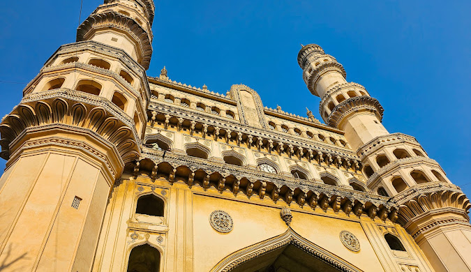
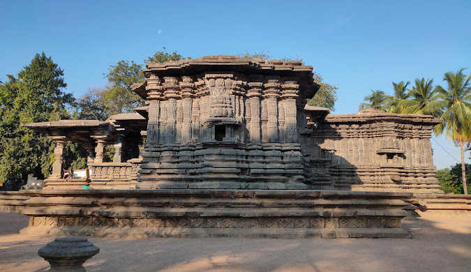
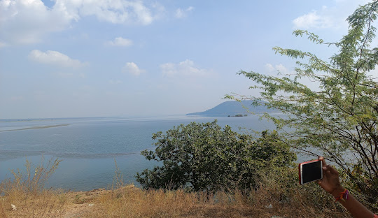
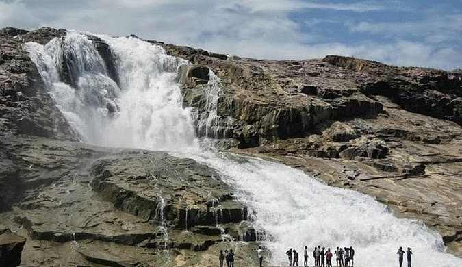
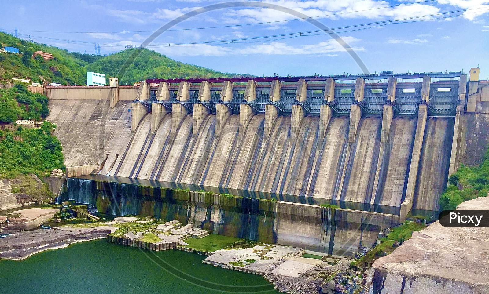

Charminar
Discover Hyderabad's landmark monument and its lively old city.
Explore Telangana's heritage, historic cities, waterfalls, and lakes.

Discover Hyderabad's landmark monument and its lively old city.

Visit the historic heartland of the Kakatiya dynasty.
Explore Medak's historic architecture and surrounding countryside.

Enjoy the scenic lake and forest landscape near Warangal.

See one of Telangana's best-known waterfalls in the Adilabad region.

Take in the reservoir, dam, and nearby historic sites.